密码学算法介绍
古典加密算法
单表密码
明文字母和密文字母一一映射。 比如凯撒加密算法，把字母进行偏移。 可以通过频率分析法破解单表密码。
- 加法密码（凯撒密码）
- 乘法密码
- 加密算法: $y = x*k % n$
- 解密算法: $x = y*k^{-1} % n$ 其中$k^{-1}$是k的乘法逆元
- 仿射密码（加法密码和乘法密码的结合）：
- 加密算法: $y = (x*k1 + k2) % n$
- 解密算法: $x = (y-k2)*k1^{-1} % n$(注意准确的说是加上k2的加法逆元)。
- 置换密码
多表密码
-
Vigenere 多表简单加法密码
- 加密算法: $y = (x+k_i) % n$
- 解密算法: $x = (y-k_i) % n$ 其中$k^{-1}$是k的乘法逆元
-
Enigma 虽然是老技术，但是是考试重点啊
-
加密需要的信息：
- 三个齿轮的外部状态MessageKey。需要注意的是，当按下某个键时，对该键进行加密的密钥并非当前齿轮的状态，而是齿轮转了一下以后的状态。如果初始设定是‘AAZ’，那么加密第一个信息时候的密钥是‘AAA’
- 齿轮的内部设定ring setting，
- 三个齿轮对应的映射情况。Enigma机器一共有5种齿轮，对应不同的映射表。
- 接线板的设置。
-
加密的过程：
- PlugBoard->Rotor 1->Rotor 2->Rotor 3->Reflect->Rotor 3反查->Rotor 2反查->Rotor 1反查->PlugBoard反查。PlugBoard和Reflect都是查表，PlugBoard的表是可以自己配置的。Rotor的步骤要复杂一点：
-
// MK MessageKey 齿轮的外部状态 RS RingSetting 齿轮的内部状态
delta = e[i].MK-e[i].RS;
// 正着查
input = (e[i].table[(input-'A'+delta+26)%26]-'A'-delta+26)%26+'A';
// 反着查
input = (e[i].rtable[(input-'A'+delta+26)%26]-'A'-delta+26)%26+'A';
2. 每次输入一个字母都会引起第一个齿轮Rotor1的转动。然后‘QEVJZ->‘RFWKA’（对应五种齿轮）是进位，会引起下一个齿轮的转动。还存在一个double stepping现象，就是当rotor 1转动到**进位后**把rotor 2带动到了**进位前**的位置，然后下一轮rotor 2会再转一次带动rotor 3。
现代密码算法
RC4 流加密算法
流加密的算法特点是速度非常快。适合大数据的即时传播。参考链接-wiki
首先得到 A permutation of all 256 possible bytes S. 我们需要传入一个initalize key。
for i from 0 to 255
S[i] := i
endfor
j := 0
for i from 0 to 255
j := (j + S[i] + key[i mod keylength]) mod 256
swap values of S[i] and S[j]
endfor
然后我们根据S对明文plain进行加密得到密文cipher。加密的过程是简单的异或，异或的内容从S中产生。所以解密的过程是一样的。
i := 0
j := 0
for l from 0 to plainlength
i := (i + 1) mod 256
j := (j + S[i]) mod 256
swap values of S[i] and S[j]
K := S[(S[i] + S[j]) mod 256]
cipher[l] := plain[l] xor K
endfor
整个算法都是非常简单的。
DES 对称密钥加密算法:star:
https://www.ruanx.net/des/ 明文是 64位=8字节。密文也是64位=8字节。密钥是64位=8字节（或者说是56 bit，因为每个byte的第8位是没有用的）。为什么这里要用位数做单位呢？因为DES是基于位的加密算法。DES加密与解密的密钥相同，称为对称加密算法。
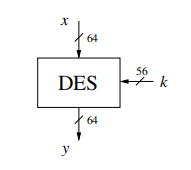
扩展欧几里徳算法用来求乘法逆元（在RSA中也有用处）。下面这个程序是对于求整数的乘法逆元而言的
def ext_euclid(a, b):
'''因为r是单调递减的，所以程序一定会终止'''
old_s,s=1,0
old_t,t=0,1
old_r,r=a,b
if b == 0:
return 1, 0, a
else:
while(r!=0):
q=old_r//r
old_r,r=r,old_r-q*r
old_s,s=s,old_s-q*s
old_t,t=t,old_t-q*t
return old_s, old_t, old_r
此时所得的$s_{i}$和$t_{i}$即满足等式$gcd(a,b)=r_{i}=as_{i}+bt_{i}$。因为AES中我们的模数是素数，所以gcd(a,b)=1。
上面的程序表达的是$r_{i+1} = r_{i-1}+r_iq_i$,$s_{i+1} = s_{i-1}+s_iq_i$,$t_{i+1} = t_{i-1}+t_iq_i$
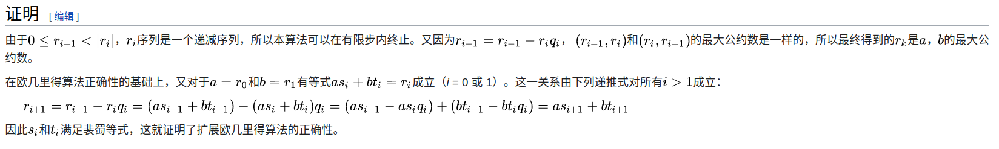
那么，对于AES来说，我们应该用扩展欧几里徳算法求扩展域中多项式的乘法逆元。
计算(x^2)*P = 1 (mod x^3+1)的P
0 1 x^3+x+1
1 0 x^2 x
x 1 x+1 x
x^2 x x 1
x^2+x+1 x+1 1 terminate
AES 对称密钥加密算法
概述：要进行$n_r+1$次密钥编排和$n_r$次轮加密，然后得到最终的加密结果。输入是128 bit，输出也是128 bit。
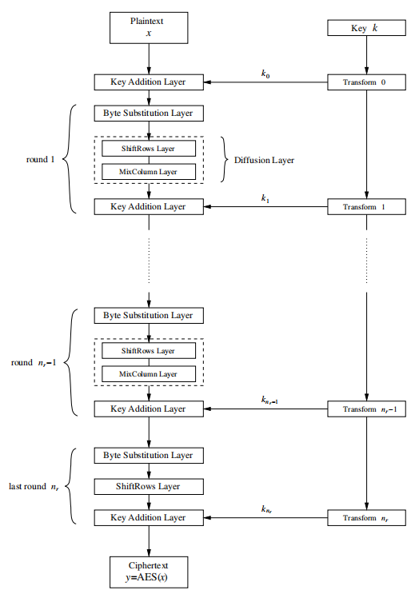
和DES类似，也是每一次计算出一个轮密钥$k_i$。
第1轮到第$n_r$轮的结构：
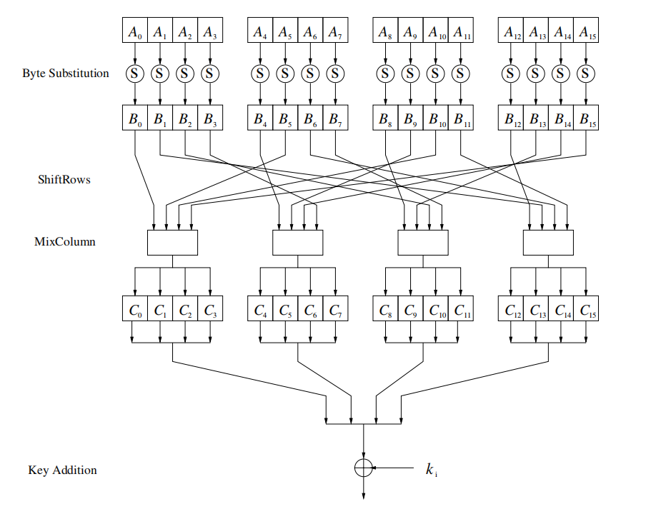
下面分别介绍每一个模块
Byte Substitution
S-Box是AES加密中唯一一个非线性元素，即$ByteSub(A) +ByteSub(B)\neq ByteSub(A+B)$。在AES中是以字节(8 bits)为单位进行转换的。假设S-box的操作为 $s=f(a)$，那么S-box的操作为：
- 先求出输入a的逆元b，上面介绍过AES用的逆元了。
- 再进行仿射变换：
AES用的逆元 输入为XY
XY0 1 2 3 4 5 6 7 8 9 A B C D E F
0 00 01 8D F6 CB 52 7B D1 E8 4F 29 C0 B0 E1 E5 C7
1 74 B4 AA 4B 99 2B 60 5F 58 3F FD CC FF 40 EE B2
2 3A 6E 5A F1 55 4D A8 C9 C1 0A 98 15 30 44 A2 C2
3 2C 45 92 6C F3 39 66 42 F2 35 20 6F 77 BB 59 19
4 1D FE 37 67 2D 31 F5 69 A7 64 AB 13 54 25 E9 09
5 ED 5C 05 CA 4C 24 87 BF 18 3E 22 F0 51 EC 61 17
6 16 5E AF D3 49 A6 36 43 F4 47 91 DF 33 93 21 3B
7 79 B7 97 85 10 B5 BA 3C B6 70 D0 06 A1 FA 81 82
8 83 7E 7F 80 96 73 BE 56 9B 9E 95 D9 F7 02 B9 A4
9 DE 6A 32 6D D8 8A 84 72 2A 14 9F 88 F9 DC 89 9A
A FB 7C 2E C3 8F B8 65 48 26 C8 12 4A CE E7 D2 62
B 0C E0 1F EF 11 75 78 71 A5 8E 76 3D BD BC 86 57
C 0B 28 2F A3 DA D4 E4 0F A9 27 53 04 1B FC AC E6
D 7A 07 AE 63 C5 DB E2 EA 94 8B C4 D5 9D F8 90 6B
E B1 0D D6 EB C6 0E CF AD 08 4E D7 E3 5D 50 1E B3
F 5B 23 38 34 68 46 03 8C DD 9C 7D A0 CD 1A 41 1C
AES的S-box 假设输入为XY
XY0 1 2 3 4 5 6 7 8 9 A B C D E F
0 63 7C 77 7B F2 6B 6F C5 30 01 67 2B FE D7 AB 76
1 CA 82 C9 7D FA 59 47 F0 AD D4 A2 AF 9C A4 72 C0
2 B7 FD 93 26 36 3F F7 CC 34 A5 E5 F1 71 D8 31 15
3 04 C7 23 C3 18 96 05 9A 07 12 80 E2 EB 27 B2 75
4 09 83 2C 1A 1B 6E 5A A0 52 3B D6 B3 29 E3 2F 84
5 53 D1 00 ED 20 FC B1 5B 6A CB BE 39 4A 4C 58 CF
6 D0 EF AA FB 43 4D 33 85 45 F9 02 7F 50 3C 9F A8
7 51 A3 40 8F 92 9D 38 F5 BC B6 DA 21 10 FF F3 D2
8 CD 0C 13 EC 5F 97 44 17 C4 A7 7E 3D 64 5D 19 73
9 60 81 4F DC 22 2A 90 88 46 EE B8 14 DE 5E 0B DB
A E0 32 3A 0A 49 06 24 5C C2 D3 AC 62 91 95 E4 79
B E7 C8 37 6D 8D D5 4E A9 6C 56 F4 EA 65 7A AE 08
C BA 78 25 2E 1C A6 B4 C6 E8 DD 74 1F 4B BD 8B 8A
D 70 3E B5 66 48 03 F6 0E 61 35 57 B9 86 C1 1D 9E
E E1 F8 98 11 69 D9 8E 94 9B 1E 87 E9 CE 55 28 DF
F 8C A1 89 0D BF E6 42 68 41 99 2D 0F B0 54 BB 16
Diffusion Layer : ShiftRow & MixColumn
- ShiftRow：注意这个是一列一列看的
B0 B4 B8 B12 B0 B4 B8 B12
B1 B5 B9 B13 => B5 B9 B13 B1
B2 B6 B10 B14 => B10 B14 B2 B6
B3 B7 B11 B15 B15 B3 B7 B11
-
MixColum：这里的乘法也是伽罗瓦域内的乘法，多项式乘法。这里的乘法是指有限域$GF(2^8)$多项式模$(X^4+1)$乘法。
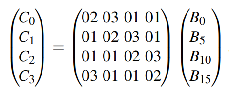
还是举一个例子：
matrix | B | mod 0x11 multiply | xor | C |
-
2 3 1 1 4 B4 B8 B12 2*4 ^ 3*3 ^ 1*2 ^ 1*1 = 8 ^ 5 ^ 2 ^ 1 = E C4 C8 C12
1 2 3 1 3 B9 B13 B1 1*4 ^ 2*3 ^ 3*2 ^ 1*1 = 4 ^ 6 ^ 6 ^ 1 = 5 C5 C9 C13
1 1 2 3 2 B14 B2 B6 = 1*4 ^ 1*3 ^ 2*2 ^ 3*1 = 4 ^ 3 ^ 4 ^ 3 = 0 C6 C10 C14
3 1 1 2 1 B3 B7 B11 3*4 ^ 1*3 ^ 1*2 ^ 2*1 = C ^ 3 ^ 2 ^ 2 = F C7 C11 C15
Key Addition Layer
这个比较简单，就是把得到的C和输入的$K_i$进行xor(加法)
Key Schedule
那么剩下的就是，这些$K_i$，是怎么来的？我们输入的密钥K有128,192,256位的，但是我们的$K_i$是128 bit的。这就是key schedule。
以128 Bits的K为例。key schedule的过程如图所示，K是原始密钥。
用公式表达就是 $W[4i] = W[4(i−1)]+g(W[4i−1])$，$W[4i+j] = W[4(i-1)+j]+W[4i+j-1],j=1,2,3$。那么函数g又是什么呢？
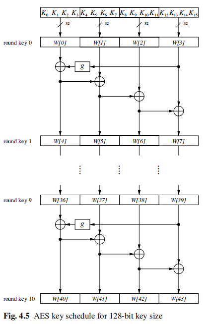
函数g是一个非线性元素，用来抵抗某些工具。g首先将输入的4个字节翻转，然后执行一个S-box的代换，最后和轮系数RC相加。
$RC[1] = x^0 = (00000001)_2,$ $RC[2] = x^1 = (00000010)_2,$ $RC[3] = x^2 = (00000100)_2,$ $......$ $RC[10] = x^9 = (00110110)_2.$
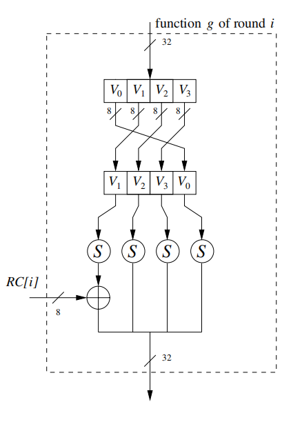
由于我们的128 bit AES一共迭代10轮，一共需要11个128bit的子密钥。
对于192 bit的K的情况，我们的AES加密需要进行12轮，需要(12+1)*4=52个密钥。由于一次可以产生6个，所以我们的密钥编排进行ceil(52/6)-1=9-1=8轮。
对于256 bit的K的情况，我们的AES加密需要进行14轮，得到(14+1)*4=60个密钥。由于一次可以产生8个，所以我们的密钥编排进行ceil(60/8)-1=7轮。这里还引入了h，不再介绍。
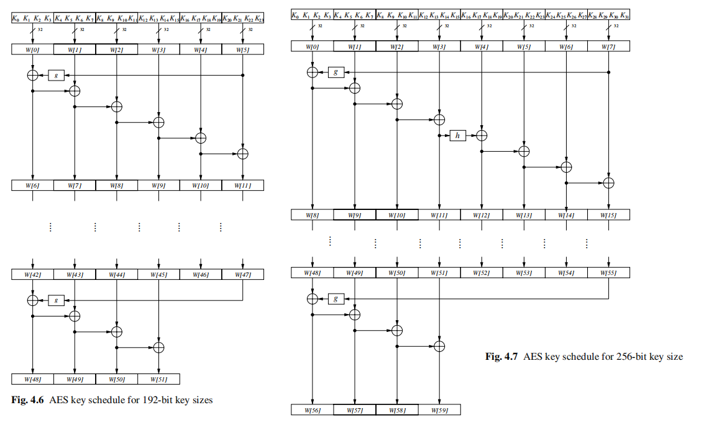
由于AES并非基于Feistel网络，所以加密和解密并不能用同一种办法解决。所有的层必须颠倒过来，ShiftRow变成InverseShiftRow，MixColumn变成InverseMixColumn，密钥编排也要逆向。
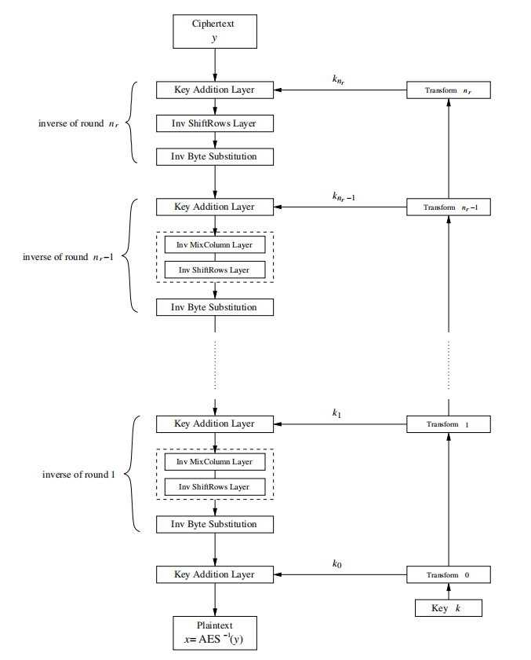
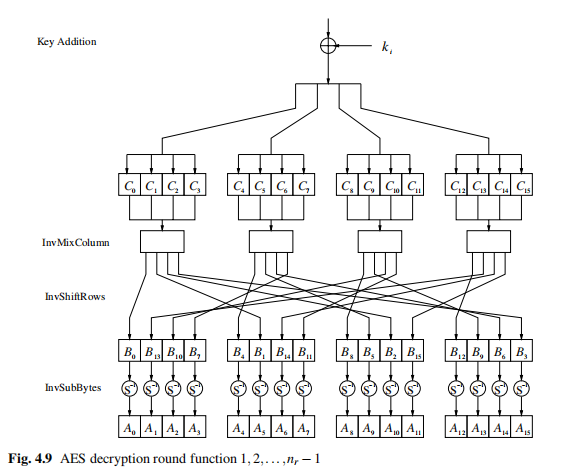
RSA 非对称密钥加密算法:star:
数学基础
欧拉函数：$\Phi(n)$=小于n且与n互素的整数个数。我们可以用分解质因数的办法求欧拉函数的值。（这里的$\Phi$就是下面的$\Phi$）。
我们可以得到当x,y是素数的时候，$\Phi(xy)=\Phi(x)\Phi(y)$
费马小定理：如果p是一个素数，$a^p \equiv a(mod\ p)$，或者说$a^{p-1} \equiv 1(mod\ p)$。是欧拉定理的一个特殊情况。
欧拉定理：如果$gcd(a,m)=1$，则有$a^{\Phi(m)} \equiv 1(mod\ m)$。
中国剩余定理CRT 求解同余问题“韩信点兵”。证明过程差不多就是构造过程了。注意下面的数论倒数就是逆元，逆元不一定存在，求逆元可以用扩展欧几里徳算法。
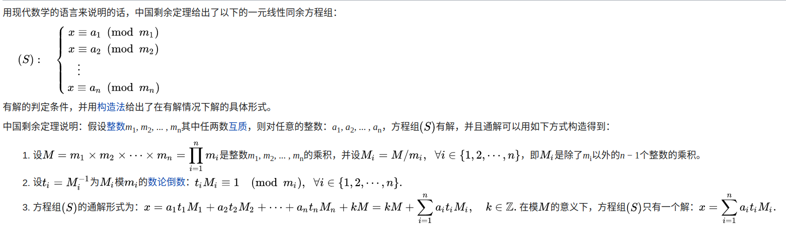
欧拉准则：
若$p>2$是一个素数，x是一个整数，$gcd(x,p)=1$，如果同余方程$x^2\equiv a(mod\ p)$有解$x\in Z_p$，则称a是模p的平方剩余，否则称a是模p的非平方剩余。
欧拉准则：若$p>2$是一个素数，x是一个整数，$gcd(x,p)=1$，我们有：
- x是模p的平方剩余当且仅当$x^{(p-1)/2}\equiv 1(mod\ p)$
- x是模p的非平方剩余当且仅当$x^{(p-1)/2}\equiv -1(mod\ p)$
证明：
如果x是模p的平方剩余，那么存在$y$使得$x\equiv y^2 (mod\ p)$。由于$gcd(x,p)=1$，所以$y \not\equiv 0(mod\ p)$。根据费马小定理，$y^{p-1}\equiv 1(mod\ p)$，所以$x^{(p-1)/2} \equiv 1(mod\ p)$。 反过来，如果$x^{(p-1)/2} \equiv 1(mod\ p)$，不妨假设$x\in Z_p = {0,1,2...p-1}$，我们有$Z_p^*={1,2,3...p-1}$是一个循环群（有点费解，可以记住）。那么存在一个生成元b，使得$x=b^i\ mod\ p, 1\le i \le p-1$。 所以$1\equiv x^{(p-1)/2}mod\ p\equiv (b^i)^{(p-1)/2}mod\ p\equiv b^{i(p-1)/2}mod\ p$。因为b的阶是p-1，所以$b^{i/2}mod\ p=1$，所以i是偶数。所以我们可以找到$y=b^{i/2}$使得$x\equiv y^2(mod\ p)$。
因为p是奇素数，$gcd(x,p)=1$，根据费马小定理，我们有$(x^{(p-1)/2}+1)(x^{(p-1)/2}-1) = x^{p-1}-1=0 (mod\ p)$。所以我们有$x^{(p-1)/2} = 1(mod\ p)$或$x^{(p-1)/2} = -1(mod\ p)$。前者就是1的情况，所以是后者。
RSA算法的证明：准确的说，是证明加密函数是解密函数的逆函数。
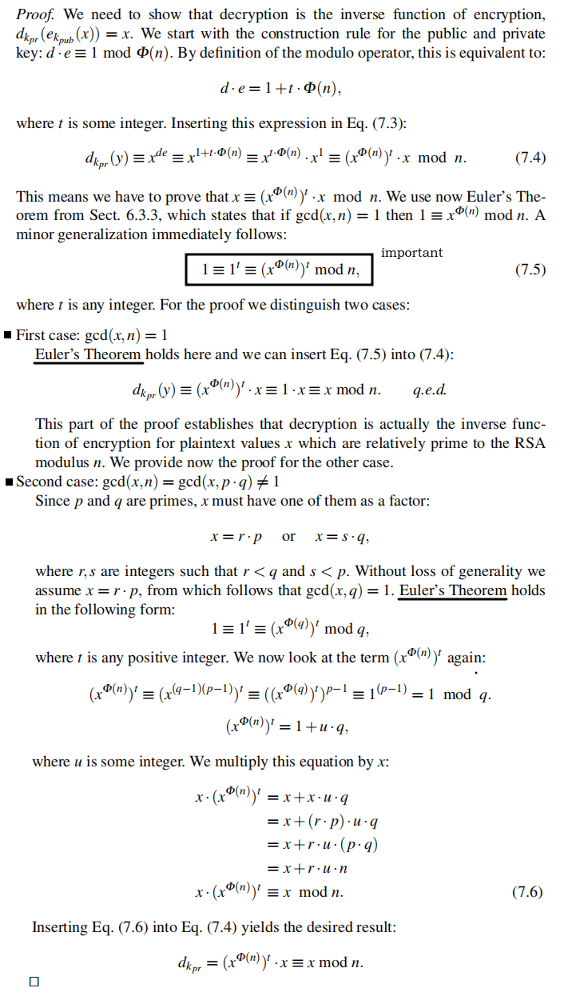
介绍
非对称密码（公钥密码体制），加密密钥和解密密钥是不同的。
选取两个大素数，p和q。计算乘积n=p*q。
n公开，p q保密。 //建立在大素数难以分解的前提下，知道n难以推出p q。大是要2^1024这个级别。
然后随机选取加密密钥e，使得Phi(n) = (p-1)(q-1)和e互素。e公开 //所以可以让e是一个素数
接着要找出d，使得 e*d = 1 mod Phi(n)。d保密 //就是乘法逆元
所以n,e是公开的。e被称为公钥。
p,q,d是保密的。d被称为私钥。
接下来我们对明文x进行加密，得到密文y。
加密过程: y = x^e % n 记做 y=e(x)
解密过程: x = y^d % n 记做 x=d(y)
RSA加密算法要比诸如AES的对称加密算法慢很多，因为涉及大量的计算。一般用于加密小规模的数据，比如用来加密AES的密钥。
所以，使用RSA算法的关键在于前两点，RSA算法的正确性在于第三点：
- e和d的选取
- 大素数p,q的生成
- 解密是加密的逆函数，即$x=d(e(x))$
e和d的选取
e和d的选取可以用扩展欧几里徳算法，在上面有介绍。$gcd(e,\Phi(n))=a\Phi(n)+de$。所以如果gcd=1,那么我们找到的d就是了。或者选一个素数e，那么我们算出的d就是我们要的。
大素数生成
随机生成一个奇数$\widetilde{p}$，是素数的概率$P(\widetilde{p}\ is\ prime) ≈ 2ln(\widetilde{p})$。
检测奇数是否是素数。不过肯定不能用因式分解法了，要是能分解的话RSA就没意义了。那么我们是怎么检测是否是素数的呢？需要进行素性测试，但是素性测试保证不同过测试的一定是合数，通过的大概率是素数。
padding
上面介绍的叫做“textbook RSA"，存在一些缺陷（如下）而不被直接使用。现实中的RSA一般会结合填充方案一起使用。
- 延展性：如果密文y被攻击者操控，可以把$y$变成$s^ey$，那么我们解密得到$x' = y^d % n = (sx)^{ed} % n = sx$。这样是不好的。
- x=0,x=1,x=-1产生的密文是y=0,y=1,y=-1。
M是要被填充的消息，k是n的字节长度，|H|是哈希函数输出字节长度，|M|是消息长度。
- Generate a string PS of length $k − |M| −2|H| −2$ of zeroed bytes. The length of PS may be zero.
- Concatenate Hash(L), PS, a single byte with hexadecimal value 0x01, and the message M to form a data block DB of length $k − |H| −1$ bytes as $DB = Hash(L)||PS||0x01||M$.
- Generate a random byte string seed of length |H|.
- Let $dbMask = MGF(seed,k−|H|−1)$, where MGF is the mask generation function. In practice, a hash function such as SHA-1 is often used as MFG.
- Let $maskedDB = DB⊕dbMask$.
- Let $seedMask = MGF(maskedDB,|H|)$.
- Let $maskedSeed = seed ⊕seedMask$.
- Concatenate a single byte with hexadecimal value 0x00, maskedSeed and maskedDB to form an encoded message EM of length k bytes as $EM = 0x00||maskedSeed||maskedDB$.
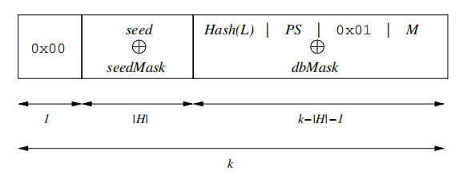
攻击
协议攻击：比如textbook RSA就是不安全的。不过填充能很大程度上解决问题。
如果你能把n分解质因数，就可以知道pq，就可以知道d。当然，这也是RSA的根本安全保障。
旁道攻击
ECC 非对称密钥加密算法
数学基础
椭圆曲线可以定义成所有满足方程$E: y^2 \equiv x^3 + ax + b\ mod\ p$的点$(x,y)$所构成的集合。 若$x^3 + ax + b$没有重复的因式或$4a^3+27b^2 \ne 0\ mod\ p$(称为判别式),则$E: y^2 \equiv x^3 + ax + b\ mod\ p$能定义成为一个群。
定义成一个群，要元素集合还要有**“加法”**。元素集合就是椭圆曲线上的点$(x,y)$在加上一个无穷远处点，加法运算定义成两个点之间的连线和曲线的焦点（如果两点重合就是切线，PQ关于X轴对称焦点在无穷远处）（也叫做点加）。
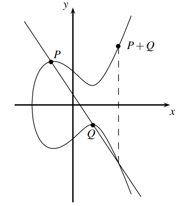
用数学语言表示为： $$ x_3 = s^2 −x_1 −x_2\ mod\ p\ y_3 = s(x_1 −x_3)−y_1\ mod\ p\ where\ s = \frac{y_2−y_1}{x_2−x_1}\ mod\ p;\ if\ P \ne Q\ (point\ addition)\ s = \frac{3x^2_1+a}{2y_1}\ mod\ p ;\ if\ P = Q\ (point\ doubling) $$ 椭圆曲线上的离散对数问题（Elliptic Curved Discrete Logarithm Problem）ECDLP：
Given is an elliptic curve E. We consider a primitive element P and another element T . The DL problem is finding the integer d, where 1 ≤ d ≤ #E, such that:
P+P+···+P = d×P = T. (d times)
#E指的是群的阶，其实没有乘法这么一说，只是为了记号上的方便引入了×号。
加密应用
在密码体制中，d通常为整数，也是私钥。公钥T是曲线上的一个点，坐标为$(x_T,y_T)$。基点P也是公开的，T=dP。
- 选择一个合适的椭圆曲线$E: y^2 \equiv x^3 + ax + b\ mod\ p$（要求具有密码学的一些良好性质），选择一个基点$P(x_p,y_p)$。另外下面的$n=#E$，是曲线的阶。
- 生成一个随机数d(d<#E)，作为私钥。计算T=dP作为公钥点。
- 加密，密文包括两部分r和s。加密需要公钥T和P，然后生成一个随机数k来加密明文m。
- r=(k×P).x ; 其中k是一个随机数且k<n ; r不可以mod n
- s = m × (k×T).x mod n ; m是明文
- 解密。解密需要私钥d，也需要公开的基点P，来解密密文r和s。
- r=k×P （这里的r是点，上面的r是数字，可以把r.x带入到椭圆曲线中得到r，所以是不需要k的）
- m = s/(d×r).x （= m × (k×T).x / (d(k×P)).x = m(kd P).x/(kd P).x）
分组加密模式
之前介绍的加密算法有的是是针对于特定长度的数据或数字的加密，那么怎么扩展到任意长度字节流呢。
电子密码簿ECB模式的弱点是：对于相同内容的明文段，加密后得到的密文块是相同的。ECB模式的优点是:加密和解密过程均可以并行处理。
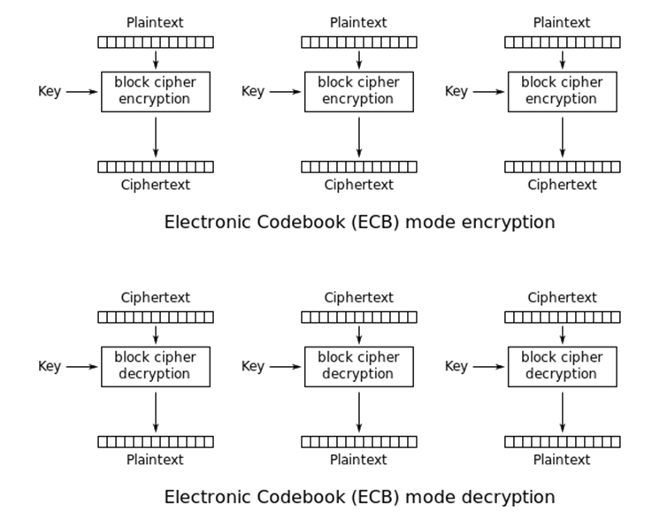
密文块链接模式CBC模式的特点是：当前块的密文与前一块的密文有关; 加密过程只能串行处理; 解密过程可以并行处理。
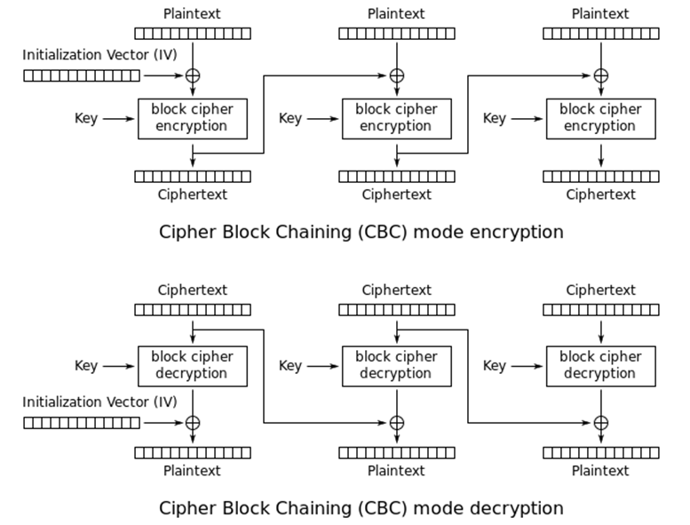
密文反馈模式CFB的优点是可以从密文传输的错误中恢复。
The plaintext is broken into 8-bit piece: $P = [P_1, P_2,...]$,where each $P_j$ has 8 bits, rather than 64 bits used in ECB and CBC. Encryption proceeds as follows. An initial 64-bit X1 is chosen. Then for $j=1,2,3,...$ the following is performed: $$ for\ j=1,2,3...\ C_j = P_j ⊕ L8(Ek(X_j)) \ X_{j+1} = R_{56}(X_j) ‖ C_j $$ then decryption is: $$ X_{j+1} = R_{56}(X_j) || C_j \ P_j = C_j ⊕ L8(Ek(X_j)) $$ we have $X_j = R_{56}(X_{j-1})||C_{j-1} = R_{48}(X_{j-2})||C_{j-2}||C_{j-1} = ...$。
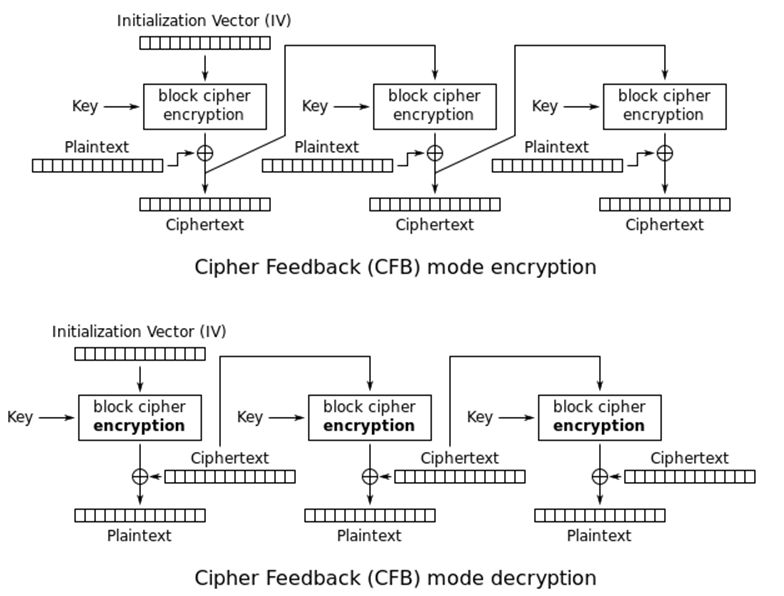
数字签名
数字签名的目的是为了证明某个消息确实是由某人生成的。这是对称加密不能保证的特性。
RSA
数字签名基本思路都是一样的：私钥加密摘要，公钥验证摘要。
m = md5(plaintext); // 一般对明文的摘要做加密
M = RSA_encrypt_private(m); // 用私钥加密,M就是所谓的签名
send(plaintext,M);
// ======================================================
m1 = md5(plaintext);
M1 = RSA_decrypt_public(m1);
check if M1==M
ECDSA
签名： $$ r = (kG).x\ mod\ n \qquad k是随机数且k<n \ s = (m+rd)/k\ mod\ n\qquad m是明文或hash, d是私钥 $$ 验证： $$ ((m/s\ mod\ n)G)+(r/s\ mod\ nR).x\ mod\ n == r \qquad R是公钥 $$
ECNR
符号和上面统一
签名： $$ r = (kG).x + m\ mod\ n \ s = k-rd\ mod\ n $$ 验证： $$ r-(sG+rR).x\ mod \ n == m\ mod\ n $$
哈希算法
严格的说，哈希算法不是加密算法，因为是单向不可逆的。但是和数字签名有很大的关系。保证数据的integrity。用作数据的摘要digest。
哈希函数的安全性三个要素：
- preimage resistance (or one-wayness)
- second preimage resistance (or weak collision resistance)
- collision resistance (or strong collision resistance)
hash family is a four-tuple (X,Y,J,H). X是可能的message，Y是可能的digest，K是keyspace，H $h_k:x \rightarrow y$。
MD5
MD5源代码 MD5是以64byte为单位进行的。他会把数据利用填充政策，分成64 bytes的块。然后对块进行计算，计算结果依赖于前一个块的计算结果。
填充
- 假定该块大小n在[0,55]字节, 则在末尾补上以下数据:
0x80 0x00 0x00 0x00 ... 0x00共56-n个 例如n==55时，只要补0x80一个字节; 当n==54时，要补上0x80及0x00两个字节。 - 假定该块大小n在[56,63]范围内时, 则应在末尾补上64-n+56个字节。例如当
n==56时, 应该补上64个字节; 当n==57时, 应该补上63个字节。补全的数据也是像0x80 0x00 0x00 ...之类的。 - 再在后面补上8个字节，这8个字节相当于一个64位的整数, 它的值=message总共的位数(不含填充内容)。
所以最后会填充到64 byte的倍数，就可以以块为单位进行加密了。加密的结果称为摘要digest，digest的长度固定为128 bits, 即16 bytes。
破解
有一种破解思路是彩虹表。
王小云。
SHA-1
算出来的hash值达到160 bit，比Md5更安全。sha-1也是分块计算，每块也是64字节，当最后一块不足64字节也按照md5的方式进行填充。数据块的最后一定要补上表示报文总共位数的8个字节。
Diffifie–Hellman Key Exchange
DH是现代非对称密码学的基础。他的数学基础是，$k ≡ (α^x)^y ≡ (α^y)^x mod\ p$。$x,y$就是通信双方的私钥，$k$就是公钥。他也是非对称加密，但是和RSA不同，他让通信双方共享了公钥。


Openssl
Openssl里面处理的都是超大的数字，所以有BIGNUM类型来存储。
BIGNUM *a; char A[0x100]="1234567890abcdef";
a = BN_new(); //开辟保存big number的空间
BN_hex2bn(&a,A); //转化string（认为string里头是“数字”）为big number
BN_bin2bn(&a,A); //转化string（认为string里头是“编码”）为big number
printf("%s", BN_bn2hex(a)); //转换big number为string
BN_rand(); //生成随机大数
BN_free(); //释放空间
密码学的最后一次作业，可以叫做“Openssl库的使用“了。记得编译的时候链接上openssl，gcc main.c -lcrypto。
MD5代码示例
所有的哈希函数都差不多是这样子调用的。
#include <openssl/md5.h>
#include <string.h>
int main{
MD5(s,strlen(s),t); //最简单的调用md5的办法
//正规的调用办法
char o[1000]={0};
MD5_CTX t;
MD5_Init(&t);
MD5_Update(&t,"123",3);
MD5_Update(&t,"456",3);
MD5_Final(o,&t);
}
RSA代码示例
#include <openssl/rsa.h>
#include <openssl/bn.h>
// 库函数 =====================================================================
RSA_generate_key(); //产生密钥
RSA_public_encrypt(); //公钥加密
RSA_private_decrypt(); //私钥解密
RSA_public_decrypy(); //公钥解密
RSA_new(); //分配一个RSA结构指针
RSA_free();
RSA *prsa;
prsa = RSA_new();
RSA_set_flags(prsa,RSA_FLAG_NO_BLINDING);
RSA_set0_key(prsa,n,e,d); //设置私钥，后来的版本是这样的，以前的版本直接修改RSA结构体
int flen = RSA_size(prsa);
RSA_private_encrypt(flen,ctext,ptext,prsa,RSA_NO_PADDING); //私钥加密,设置不填充
RSA_public_decrypt(flen,ctext,ptext,prsa,RSA_PKCS1_PADDING); //公钥解密,设置填充type1，当然这个和上面那个对不起来
#include <openssl/rsa.h>
#include <openssl/bn.h>
// textbook RSA ================================================
BIGNUM* rsa_encrypt_decrypt(BIGNUM *pin, BIGNUM *pn, BIGNUM *pe)
{
BIGNUM *pout;
BN_CTX *ctx;
pout = BN_new();
ctx = BN_CTX_new();
BN_mod_exp(pout, pin, pe, pn, ctx);
BN_CTX_free(ctx);
return pout;
}
ECC代码示例
放代码片段，里面有很多的椭圆曲线群的运算。
#include <openssl/ec.h>
#include <openssl/rand.h>
#include <openssl/bn.h>
/**
* @brief ECC解密，按照Menezes-Vanstone公钥密码体制
*
* @param group 椭圆曲线确定的代数群
* @param G 基点
* @param order 椭圆曲线的阶
* @param private_key ECC私钥
* @param ciphertext_r 密文的第一部分
* @param ciphertext_s 密文的第二部分
* @return BIGNUM* 明文
*/
BIGNUM *ecc_decrypt(EC_GROUP *group, EC_POINT *G, BIGNUM *order, BIGNUM *private_key, BIGNUM *ciphertext_r, BIGNUM *ciphertext_s)
{
EC_POINT *T;
BN_CTX *ctx;
BIGNUM *tx, *ty;
BIGNUM *plaintext; //
ctx = BN_CTX_new();
tx = BN_new();
ty = BN_new();
T = EC_POINT_new(group);
EC_POINT_set_compressed_coordinates_GFp(group, T, ciphertext_r, 0, ctx); /* T=k*G;其中T的x坐标=r, y坐标自动计算 */
EC_POINT_mul(group, T, NULL, T, private_key, ctx); /* T = d*k*G */
EC_POINT_get_affine_coordinates_GFp(group, T, tx, ty, ctx); /* tx = (d*k*G).x */
BN_mod_inverse(tx, tx, order, ctx); /* tx = tx^-1 = (k*R).x ^ -1 */
plaintext = BN_new();
BN_clear(plaintext);
BN_mod_mul(plaintext, ciphertext_s, tx, order, ctx); /* m = s/(d*r).x = m * (k*R).x / (k*R).x = m */
BN_free(tx);
BN_free(ty);
BN_CTX_free(ctx);
EC_POINT_free(T);
return plaintext;
}
/**
* @brief ECC加密，按照Menezes-Vanstone公钥密码体制
*
* @param group 群
* @param G 基点
* @param order 阶
* @param public_key 公钥
* @param plaintext 明文
* @param ciphertext_r 这个其实是输出，密文的第一部分
* @param ciphertext_s 这个其实是输出，密文的第二部分
*/
void ecc_encrypt(EC_GROUP *group, EC_POINT *G, BIGNUM *order, EC_POINT *public_key, BIGNUM *plaintext, BIGNUM *ciphertext_r, BIGNUM *ciphertext_s)
{
long ticks;
BIGNUM *k, *tx, *ty;
EC_POINT *T;
BN_CTX *ctx;
ctx = BN_CTX_new();
k = BN_new();
tx = BN_new(); /* 临时点T的x坐标 */
ty = BN_new(); /* 临时点T的y坐标 */
ticks = (long)time(NULL);
RAND_add(&ticks, sizeof(ticks), 1); /* srand() */
BN_rand(k, BN_num_bits(order), 0, 0); /* 产生随机数k, 位数与n相等 */
T = EC_POINT_new(group);
EC_POINT_mul(group, T, k, NULL, NULL, ctx); /* T = k*G */
EC_POINT_get_affine_coordinates_GFp(group, T, tx, ty, ctx); /* tx = (k*G).x */
BN_copy(ciphertext_r, tx); /* r = 密文第1部分 = (k*G).x; 注意(k*G).x不可以mod n */
EC_POINT_mul(group, T, NULL, public_key, k, ctx); /* T = k*R = k*d*G */
EC_POINT_get_affine_coordinates_GFp(group, T, tx, ty, ctx); /* tx = (k*R).x */
BN_mod_mul(ciphertext_s, plaintext, tx, order, ctx); /* s = 密文第2部分 = m * (k*R).x mod n */
BN_free(tx);
BN_free(ty);
BN_free(k);
BN_CTX_free(ctx);
EC_POINT_free(T);
}
#include <openssl/bn.h>
// 获取ECC group 和基点 G ======================================
EC_GROUP *group;
EC_POINT *G, *R;
group = EC_GROUP_new(EC_GFp_mont_method());
ctx = BN_CTX_new();
EC_GROUP_set_curve_GFp(group, p, a, b, ctx);
G = EC_POINT_new(group);
EC_POINT_set_affine_coordinates_GFp(group, G, gx, gy, ctx);
EC_GROUP_set_generator(group, G, order, BN_value_one()); /* 基点=G, G的阶=n, 余因子=1 */
n = ecc_decrypt(group,G,order,de,n10,n11);
d = ecc_decrypt(group,G,order,de,d10,d11);
x1 = ecc_decrypt(group,G,order,de,x20,x21);
x = rsa_encrypt_decrypt(x1,n,d); // x的求解没有问题